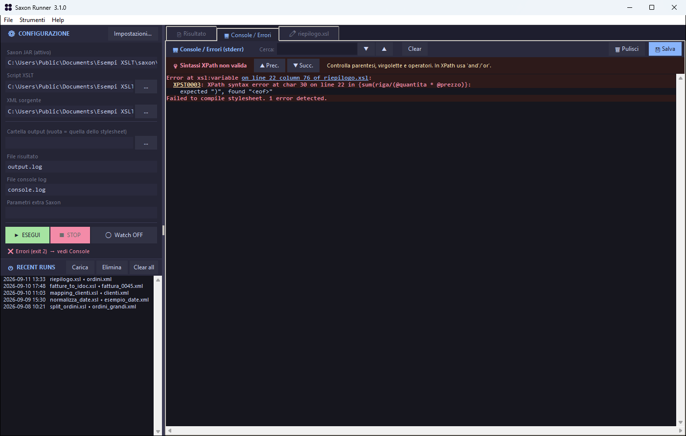
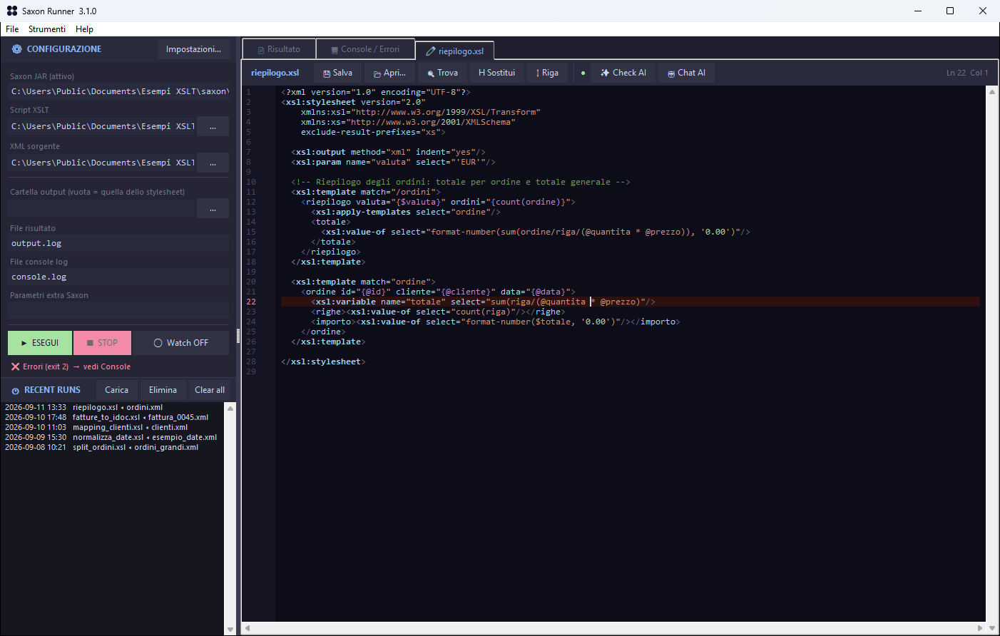
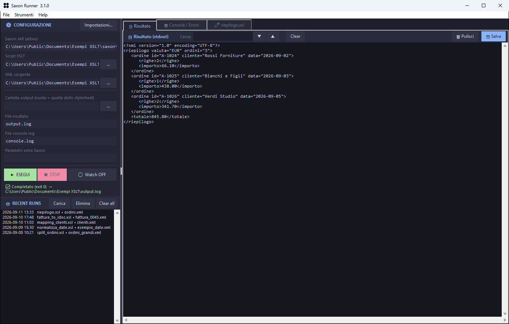

Progetti / Saxon Runner
Saxon Runner
XSLT e Saxon su Windows, senza riga di comando.
Scegli lo stylesheet e l'XML, premi Esegui. Il risultato e gli errori di Saxon arrivano in due schede separate, e un clic sull'errore ti porta alla riga giusta nell'editor. Nato per chi scrive mapping XSLT tutti i giorni e non vuole più incollare percorsi in un prompt dei comandi.
- Windows 10 e 11
- Gratuito e open source
- Serve Java e un JAR di Saxon (HE è gratuito)

XPST0003 spiegato in italiano, la posizione nel file cliccabile, la riga di comando esatta in cima.Cosa fa
Quello che serve per scrivere e provare una trasformazione, senza aprire altro.
Esegue Saxon senza ricordare la sintassi
HE, PE o EE, anche più versioni configurate. Parametri, output e log su file, e la riga di comando esatta sempre visibile.
Errori che portano alla riga giusta
Console colorata, codici d'errore spiegati, posizioni cliccabili anche nei moduli inclusi e nelle cartelle con spazi.
Riparte quando salvi
Con Watch attivo, salvi lo stylesheet o l'XML e la trasformazione riparte da sola. Una alla volta, anche se salvi di continuo.
Un editor che rispetta i file
Evidenziazione della sintassi, trova e sostituisci, righe d'errore segnate. Uno stylesheet in ISO-8859-1 resta ISO-8859-1.
Le ultime esecuzioni a portata di mano
Cento combinazioni di stylesheet e XML a un doppio clic, e configurazioni da salvare o passare a un collega.
Si aggiorna da solo
All'avvio controlla se c'è una versione nuova, verifica il checksum dell'installer e si riapre aggiornato.
Dall'errore alla correzione
Il clic sulla posizione apre lo stylesheet con la riga segnata. Corretta e salvata, la trasformazione riparte.


Un assistente AI che resta sul tuo computer
Se usi Ollama o LM Studio, Saxon Runner può proporre completamenti mentre scrivi, controllare lo stylesheet segnando le righe sospette e rispondere a domande su quello che hai aperto.
Il modello gira sul tuo PC: con l'endpoint su localhost il codice non va da nessuna parte. È facoltativo, e da spento non apre nessuna connessione.
Cosa riceve il modello
- Autocompletamento: le ultime 40 righe prima del cursore
- Controllo: i primi 3000 caratteri dello stylesheet
- Chat: i tuoi messaggi e lo stylesheet come contesto
- Solo all'indirizzo che scegli tu nelle impostazioni
Installazione
Due minuti, senza password di amministratore.
- Scarica SaxonRunner-Setup.exe e avvialo: si installa per il tuo utente.
- Al primo avvio: e scegli il JAR di Saxon.
- Scegli stylesheet e XML e premi Esegui.
SHA256SUMS.txt.Aggiornamenti
La versione installata propone gli aggiornamenti da sola e si riapre aggiornata; impostazioni e cronologia restano. La versione portatile avvisa e porta alla pagina di download.
Disinstallazione
Da . Alla fine chiede se eliminare anche impostazioni e cronologia; i tuoi file non vengono mai toccati.
Requisiti
Windows 10 o 11 a 64 bit, Java e un JAR di Saxon. Saxon non è incluso: usi la versione e la licenza che ti servono.
Novità della 3.1
La prima versione pubblica nasce da una code review completa della 3.0. Fra le correzioni:
- Niente più finestra nera di Java a ogni esecuzione.
- Il clic sull'errore funziona con i percorsi
file:/C:/…e con le cartelle che contengono spazi. - I file non UTF-8 non vengono più alterati al salvataggio.
- Un salvataggio fallito alla chiusura non fa più perdere le modifiche.
- Evidenziazione della sintassi su 3000 righe: da 9 s a 55 ms.
Sostieni il progetto
Saxon Runner è gratuito e open source, e lo resterà. Se ti fa risparmiare tempo e ti va, puoi offrire un caffè a chi lo mantiene. Nessun obbligo: funziona identico in ogni caso.
☕ Offri un caffè con PayPal